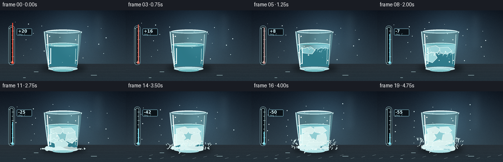
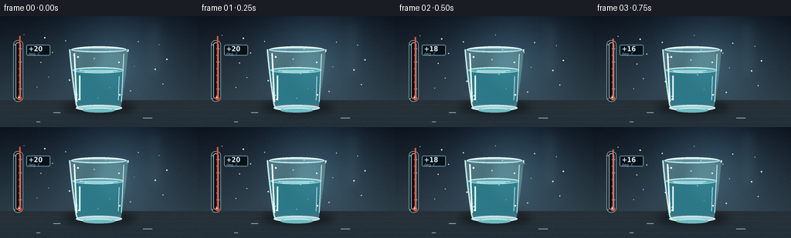
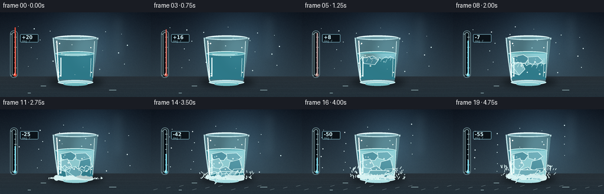

CODING AGENTS AS PIXEL WORLD MODELS
traex/DeepSeek-V4.1-Flash · phygen_091
点击播放 · 原生 RGB 像素
逐轮保存的候选
回放视频、检查图与代码变化。
每份候选均可单独播放。实际图片检查记录在下方工具轨迹中。
候选 01播放与检查图
点击播放 · 原生 RGB 像素

展开代码变化
--- 上一保存版本
+++ 本次保存版本
@@ -0,0 +1,389 @@
+"""Procedural RGB video: a glass of water freezing in a rapid cold snap."""
+
+from pathlib import Path
+
+import numpy as np
+from PIL import Image, ImageDraw, ImageFilter, ImageFont
+
+import artifact_io
+
+
+W, H, N, FPS = 256, 144, 20, 4
+SCALE = 4
+SS_W, SS_H = W * SCALE, H * SCALE
+ROOT = Path(__file__).resolve().parent
+
+
+def lerp(a, b, t):
+ return a + (b - a) * t
+
+
+def smoothstep(a, b, x):
+ t = np.clip((x - a) / (b - a), 0.0, 1.0)
+ return t * t * (3.0 - 2.0 * t)
+
+
+def color_mix(a, b, t):
+ return tuple(int(round(lerp(x, y, t))) for x, y in zip(a, b))
+
+
+def vertical_gradient(top, bottom, height=SS_H, width=SS_W):
+ y = np.linspace(0.0, 1.0, height, dtype=np.float32)[:, None, None]
+ top_arr = np.array(top, dtype=np.float32)[None, None, :]
+ bottom_arr = np.array(bottom, dtype=np.float32)[None, None, :]
+ arr = top_arr * (1.0 - y) + bottom_arr * y
+ return np.repeat(arr, width, axis=1)
+
+
+def add_noise(img, rng, amount=2.0):
+ arr = np.asarray(img, dtype=np.float32)
+ fine = rng.normal(0.0, amount, (SS_H, SS_W, 1)).astype(np.float32)
+ broad = rng.normal(0.0, amount * 0.7, (SS_H // 8, SS_W // 8, 1)).astype(np.float32)
+ broad = np.repeat(np.repeat(broad, 8, axis=0), 8, axis=1)[:SS_H, :SS_W]
+ return Image.fromarray(np.clip(arr + fine + broad, 0, 255).astype(np.uint8), "RGB")
+
+
+def draw_glow(base, box, color, radius, alpha):
+ layer = Image.new("RGBA", base.size, (0, 0, 0, 0))
+ draw = ImageDraw.Draw(layer)
+ draw.ellipse(box, fill=(*color, alpha))
+ layer = layer.filter(ImageFilter.GaussianBlur(radius))
+ base.alpha_composite(layer)
+
+
+def cubic_bezier(p0, p1, p2, p3, steps=60):
+ t = np.linspace(0.0, 1.0, steps, dtype=np.float32)[:, None]
+ p = (
+ (1 - t) ** 3 * np.array(p0)
+ + 3 * (1 - t) ** 2 * t * np.array(p1)
+ + 3 * (1 - t) * t**2 * np.array(p2)
+ + t**3 * np.array(p3)
+ )
+ return [tuple(map(float, row)) for row in p]
+
+
+def make_background(frame, rng):
+ # Cold studio wall and a dark, slightly reflective stone tabletop.
+ arr = vertical_gradient((15, 23, 34), (58, 79, 91))
+ yy, xx = np.mgrid[0:SS_H, 0:SS_W].astype(np.float32)
+ vignette = 1.0 - 0.32 * (((xx / SS_W - 0.48) ** 2) * 1.15 + ((yy / SS_H - 0.46) ** 2) * 0.85)
+ arr *= np.clip(vignette, 0.55, 1.0)[:, :, None]
+
+ # A restrained cool key light behind the glass.
+ halo = np.exp(-(((xx - 151 * SCALE) / (68 * SCALE)) ** 2 + ((yy - 52 * SCALE) / (62 * SCALE)) ** 2))
+ arr += halo[:, :, None] * np.array((22, 37, 44), dtype=np.float32)
+
+ # Table plane with a subtle reflected horizon.
+ table_y = 109 * SCALE
+ table = np.clip((yy - table_y) / (SS_H - table_y), 0, 1)
+ table_col = np.array((39, 48, 55), dtype=np.float32) * (1 - table[:, :, None] * 0.28)
+ table_col += np.array((7, 14, 18), dtype=np.float32) * table[:, :, None]
+ mask = yy >= table_y
+ arr[mask] = table_col[mask]
+
+ # Fine speckle in the wall keeps the gradients from looking synthetic.
+ speck = rng.normal(0, 1, (SS_H // 3, (SS_W + 2) // 3, 1)).astype(np.float32)
+ speck = np.repeat(np.repeat(speck, 3, axis=0), 3, axis=1)[:SS_H, :SS_W]
+ arr += speck * 1.25
+ bg = Image.fromarray(np.clip(arr, 0, 255).astype(np.uint8), "RGB").convert("RGBA")
+
+ # Defocused rear highlight, like a narrow window strip.
+ soft = Image.new("RGBA", bg.size, (0, 0, 0, 0))
+ sd = ImageDraw.Draw(soft)
+ sd.rounded_rectangle(
+ (190 * SCALE, 5 * SCALE, 211 * SCALE, 82 * SCALE),
+ radius=5 * SCALE,
+ fill=(143, 189, 205, 18),
+ )
+ soft = soft.filter(ImageFilter.GaussianBlur(7 * SCALE))
+ bg.alpha_composite(soft)
+
+ # Table grain and tiny edge highlights.
+ grain = Image.new("RGBA", bg.size, (0, 0, 0, 0))
+ gd = ImageDraw.Draw(grain)
+ for y in (116, 121, 128, 136):
+ jitter = rng.integers(-1, 2)
+ gd.line((0, (y + jitter) * SCALE, SS_W, (y + 1) * SCALE), fill=(118, 148, 157, 10), width=1 * SCALE)
+ bg.alpha_composite(grain)
+ return bg
+
+
+def glass_geometry():
+ # Outer silhouette, sampled with beziers for an elegant tapered tumbler.
+ left = (
+ cubic_bezier((90, 43), (92, 67), (95, 91), (99, 116), 70)
+ + [(102, 120), (111, 122), (128, 122)]
+ + [(145, 122), (154, 120), (157, 116)]
+ + cubic_bezier((157, 116), (161, 91), (164, 67), (166, 43), 70)
+ )
+ return [(x * SCALE, y * SCALE) for x, y in left]
+
+
+def draw_thermometer(base, frame, rng):
+ d = ImageDraw.Draw(base, "RGBA")
+ x0, x1 = 17, 30
+ y0, y1 = 31, 111
+ # Frosted metal backing and mounting screws.
+ d.rounded_rectangle((x0 * SCALE, y0 * SCALE, x1 * SCALE, y1 * SCALE), radius=6 * SCALE,
+ fill=(21, 29, 35, 205), outline=(114, 147, 156, 135), width=1 * SCALE)
+ d.rounded_rectangle((20 * SCALE, 34 * SCALE, 27 * SCALE, 107 * SCALE), radius=3 * SCALE,
+ fill=(9, 17, 23, 245), outline=(151, 186, 192, 55), width=1 * SCALE)
+ for sy in (36, 106):
+ d.ellipse(((x0 + 1) * SCALE, sy * SCALE, (x0 + 3) * SCALE, (sy + 2) * SCALE), fill=(104, 128, 133, 120))
+
+ # Scale marks: room temperature down to a deep cryogenic reading.
+ for i, temp in enumerate((20, 10, 0, -10, -20, -30, -40, -50)):
+ ty = lerp(42, 103, i / 7)
+ tick = 4 if temp in (20, 0, -40) else 2
+ d.line((24 * SCALE, ty * SCALE, (24 + tick) * SCALE, ty * SCALE), fill=(164, 192, 196, 130), width=1 * SCALE)
+
+ progress = smoothstep(0.02, 1.0, frame / (N - 1))
+ temp = lerp(20, -55, progress)
+ fill_y = lerp(42, 103, (-temp) / 75)
+ # Mercury is red while warm and icy cyan after crossing zero.
+ warm = np.clip((temp + 5) / 25, 0, 1)
+ mercury = color_mix((116, 213, 231), (236, 77, 57), warm)
+ d.line((25.5 * SCALE, fill_y * SCALE, 25.5 * SCALE, 106 * SCALE), fill=(*mercury, 235), width=2 * SCALE)
+ d.ellipse((22.8 * SCALE, 103.5 * SCALE, 28.2 * SCALE, 109 * SCALE), fill=(*mercury, 240))
+ d.ellipse((23.8 * SCALE, 104.5 * SCALE, 25.5 * SCALE, 106.2 * SCALE), fill=(255, 244, 218, 120))
+
+ # Reading label stays compact and legible at native resolution.
+ try:
+ font = ImageFont.truetype("/usr/share/fonts/truetype/dejavu/DejaVuSansCondensed-Bold.ttf", 9 * SCALE)
+ except OSError:
+ font = ImageFont.load_default()
+ label = f"{round(temp):+d}"
+ d.rounded_rectangle((34 * SCALE, 37 * SCALE, 65 * SCALE, 51 * SCALE), radius=2 * SCALE,
+ fill=(10, 18, 24, 205), outline=(107, 154, 169, 100), width=1 * SCALE)
+ d.text((37 * SCALE, 37 * SCALE), label, font=font, fill=(205, 237, 244, 245), stroke_width=1, stroke_fill=(10, 18, 24, 180))
+ d.text((37 * SCALE, 46 * SCALE), "deg C", font=ImageFont.truetype(
+ "/usr/share/fonts/truetype/dejavu/DejaVuSansMono.ttf", 5 * SCALE), fill=(122, 165, 178, 205))
+
+
+def draw_glass_back(base, rng):
+ d = ImageDraw.Draw(base, "RGBA")
+ poly = glass_geometry()
+ # Glass casts a soft cool shadow on the table.
+ shadow = Image.new("RGBA", base.size, (0, 0, 0, 0))
+ sd = ImageDraw.Draw(shadow)
+ sd.ellipse((83 * SCALE, 111 * SCALE, 175 * SCALE, 126 * SCALE), fill=(3, 8, 12, 135))
+ shadow = shadow.filter(ImageFilter.GaussianBlur(5 * SCALE))
+ base.alpha_composite(shadow)
+
+ # Back wall seen through the glass, tinted and displaced slightly.
+ d.polygon(poly, fill=(78, 118, 129, 38))
+ d.line(poly[:71], fill=(167, 209, 216, 92), width=2 * SCALE)
+ d.line(poly[142:], fill=(178, 218, 224, 115), width=2 * SCALE)
+ d.ellipse((92 * SCALE, 40 * SCALE, 164 * SCALE, 47 * SCALE), fill=(98, 148, 160, 34), outline=(189, 228, 232, 125), width=2 * SCALE)
+ d.arc((94 * SCALE, 40 * SCALE, 162 * SCALE, 47 * SCALE), 195, 345, fill=(231, 249, 250, 115), width=1 * SCALE)
+
+ # Base thickness and caustic.
+ d.ellipse((98 * SCALE, 115 * SCALE, 158 * SCALE, 123 * SCALE), fill=(159, 211, 218, 38), outline=(202, 235, 238, 100), width=2 * SCALE)
+ d.arc((104 * SCALE, 117 * SCALE, 152 * SCALE, 123 * SCALE), 10, 170, fill=(228, 249, 247, 120), width=1 * SCALE)
+
+
+def crystal_polygons(level, rng):
+ """Return deterministic faceted ice forms as crystal growth advances."""
+ polys = []
+ if level <= 0:
+ return polys
+ # The first ice appears at the waterline and along the glass edges.
+ top = 72 + 2.5 * (1 - min(level / 0.45, 1))
+ edge = 100 + 2 * level
+ bottom = 112 - 8 * level
+ # Translucent, angular plates with a visible crystalline spine.
+ specs = [
+ (101, top + 3, 119, top - 1, 129, top + 5, 122, top + 14, 104, top + 12),
+ (128, top + 2, 145, top + 1, 153, top + 9, 143, top + 16, 129, top + 12),
+ (98, top + 17, 114, top + 12, 121, top + 24, 111, top + 34, 98, top + 29),
+ (135, top + 16, 151, top + 12, 155, top + 27, 145, top + 35, 132, top + 29),
+ (111, top + 31, 127, top + 25, 139, top + 34, 133, top + 48, 113, top + 45),
+ (99, top + 41, 115, top + 36, 124, top + 49, 116, edge, 101, edge - 2),
+ (135, top + 39, 151, top + 35, 155, edge - 1, 140, edge, 126, top + 49),
+ (118, top + 44, 137, top + 41, 146, bottom, 115, bottom, 107, top + 54),
+ ]
+ count = int(np.ceil(level * len(specs)))
+ for i, spec in enumerate(specs[:count]):
+ alpha = int(32 + 120 * min(1.0, level * 1.8))
+ shift_x = rng.integers(-1, 2)
+ shift_y = rng.integers(-1, 2)
+ pts = [((x + shift_x) * SCALE, (y + shift_y) * SCALE) for x, y in zip(spec[0::2], spec[1::2])]
+ polys.append((pts, alpha, i))
+ return polys
+
+
+def draw_water_and_ice(base, frame, rng):
+ d = ImageDraw.Draw(base, "RGBA")
+ t = frame / (N - 1)
+ freeze = smoothstep(0.14, 0.90, t)
+ # Liquid body: a subtly refractive blue-green volume.
+ water_poly = [(94 * SCALE, 70 * SCALE), (160 * SCALE, 70 * SCALE),
+ (157 * SCALE, 114 * SCALE), (100 * SCALE, 114 * SCALE)]
+ liquid_col = color_mix((45, 121, 137), (72, 151, 160), 0.25 * freeze)
+ d.polygon(water_poly, fill=(*liquid_col, 158))
+
+ # Surface meniscus, with an elliptical plane to sell the glass volume.
+ d.ellipse((94 * SCALE, 66 * SCALE, 160 * SCALE, 74 * SCALE), fill=(91, 174, 183, 155),
+ outline=(187, 231, 232, 155), width=1 * SCALE)
+ d.arc((96 * SCALE, 66.5 * SCALE, 158 * SCALE, 73 * SCALE), 190, 350, fill=(225, 250, 248, 190), width=1 * SCALE)
+
+ # Ripples decay as the surface stiffens.
+ if freeze < 0.74:
+ amp = (1 - freeze / 0.74) * 1.1
+ for i, y in enumerate((70.5, 72.0)):
+ x1 = 103 + 4 * i + 3 * np.sin(t * 20 + i)
+ x2 = 149 - 4 * i + 3 * np.cos(t * 16 + i)
+ d.line((x1 * SCALE, y * SCALE, x2 * SCALE, y * SCALE), fill=(203, 240, 240, int(70 * amp + 10)), width=1 * SCALE)
+
+ # Directional freezing: a bright, branching front advances downward.
+ front_y = lerp(73, 113, smoothstep(0.08, 0.92, t))
+ if freeze > 0.01:
+ # Translucent solid region behind the front.
+ ice_poly = [(96 * SCALE, 70 * SCALE), (159 * SCALE, 70 * SCALE),
+ (157 * SCALE, front_y * SCALE), (100 * SCALE, front_y * SCALE)]
+ d.polygon(ice_poly, fill=(151, 213, 218, int(75 * freeze)))
+ # Crystal facets and internal fracture lines.
+ for poly, alpha, index in crystal_polygons(freeze, rng):
+ fill = color_mix((123, 198, 207), (220, 243, 241), min(1, freeze * 1.25))
+ d.polygon(poly, fill=(*fill, min(185, alpha + 20)))
+ d.line(poly + [poly[0]], fill=(231, 250, 248, min(210, alpha + 35)), width=1 * SCALE)
+ # Jagged advancing front, visible even when the ice is dense.
+ points = []
+ for i, x in enumerate(np.linspace(99, 157, 17)):
+ y = front_y + 2.2 * np.sin(i * 2.4 + t * 7) + 1.5 * np.sin(i * 5.7)
+ points.append((x * SCALE, y * SCALE))
+ d.line(points, fill=(228, 251, 249, int(210 * min(1, freeze * 2))), width=1 * SCALE)
+ # Needle-like secondary crystals spreading from the front.
+ for i in range(7):
+ xx = 104 + i * 8
+ yy = front_y + (i % 3 - 1) * 2
+ d.line((xx * SCALE, yy * SCALE, (xx - 3) * SCALE, (yy + 6) * SCALE),
+ fill=(199, 241, 241, int(105 * freeze)), width=1 * SCALE)
+
+ # A few trapped air bubbles, slowly becoming fixed in the solid.
+ bubbles = [(116, 91, 1.4), (139, 84, 1.1), (126, 102, 0.9), (147, 105, 1.3), (108, 81, 0.7)]
+ for i, (bx, by, r) in enumerate(bubbles):
+ visible = smoothstep(0.20 + i * 0.035, 0.47 + i * 0.035, t)
+ if visible > 0:
+ d.ellipse(((bx - r) * SCALE, (by - r) * SCALE, (bx + r) * SCALE, (by + r) * SCALE),
+ fill=(209, 243, 242, int(80 * visible)), outline=(240, 255, 251, int(150 * visible)), width=1 * SCALE)
+
+ # Vertical highlight inside the liquid, a strong clue for glass.
+ d.line((103 * SCALE, 77 * SCALE, 103 * SCALE, 109 * SCALE), fill=(226, 251, 249, 115), width=2 * SCALE)
+ d.line((154 * SCALE, 78 * SCALE, 153 * SCALE, 109 * SCALE), fill=(192, 230, 230, 70), width=1 * SCALE)
+
+
+def draw_frost(base, frame, rng):
+ d = ImageDraw.Draw(base, "RGBA")
+ t = frame / (N - 1)
+ frost = smoothstep(0.48, 1.0, t)
+ if frost <= 0:
+ return
+ # Frost climbs from the base and creeps in from both lower edges.
+ rng2 = np.random.default_rng(9200 + frame)
+ for i in range(44):
+ side = -1 if i % 2 == 0 else 1
+ x = (128 + side * (28 + rng2.uniform(0, 18))) * SCALE
+ y = (119 - rng2.uniform(0, 24) * frost) * SCALE
+ length = (1.5 + rng2.uniform(0, 5) * frost) * SCALE
+ ang = rng2.uniform(-0.9, 0.9)
+ x2 = x + np.sin(ang) * length
+ y2 = y - np.cos(ang) * length
+ d.line((x, y, x2, y2), fill=(222, 246, 245, int(105 * frost)), width=1 * SCALE)
+ # Opaque, soft frost patches at the foot.
+ for i in range(14):
+ x = 96 + i * 4.5
+ y = 117 - rng2.uniform(0, 5) * frost
+ r = (2 + rng2.uniform(0, 3)) * SCALE
+ d.ellipse((x * SCALE - r, y * SCALE - r, x * SCALE + r, y * SCALE + r),
+ fill=(216, 242, 242, int(55 * frost)))
+ # Final condensation haze on the upper rim.
+ d.arc((92 * SCALE, 39 * SCALE, 164 * SCALE, 49 * SCALE), 190, 350,
+ fill=(225, 248, 248, int(170 * frost)), width=1 * SCALE)
+
+
+def draw_foreground_glass(base, frame, rng):
+ d = ImageDraw.Draw(base, "RGBA")
+ poly = glass_geometry()
+ # Strong vertical reflections and a thin luminous rim.
+ d.line(poly[:71], fill=(209, 239, 240, 140), width=1 * SCALE)
+ d.line(poly[142:], fill=(211, 241, 242, 155), width=2 * SCALE)
+ d.arc((92 * SCALE, 39 * SCALE, 164 * SCALE, 48 * SCALE), 190, 352,
+ fill=(235, 252, 251, 185), width=1 * SCALE)
+ d.line((96 * SCALE, 48 * SCALE, 99 * SCALE, 111 * SCALE), fill=(245, 255, 252, 135), width=2 * SCALE)
+ d.line((160 * SCALE, 49 * SCALE, 157 * SCALE, 111 * SCALE), fill=(224, 247, 246, 100), width=1 * SCALE)
+ # Tiny highlights, with a slight temporal shimmer from the cold key light.
+ for i, (x, y, r) in enumerate(((101, 53, 1.2), (154, 60, 0.9), (102, 108, 0.8), (155, 102, 1.0))):
+ pulse = 0.7 + 0.3 * np.sin(frame * 0.9 + i)
+ d.ellipse(((x - r) * SCALE, (y - r) * SCALE, (x + r) * SCALE, (y + r) * SCALE),
+ fill=(255, 255, 249, int(205 * pulse)))
+
+
+def draw_table_details(base, frame, rng):
+ d = ImageDraw.Draw(base, "RGBA")
+ # Thin reflected caustic under the glass; it cools as ice forms.
+ t = frame / (N - 1)
+ cold = smoothstep(0.15, 0.9, t)
+ caustic = color_mix((111, 186, 192), (173, 224, 228), cold)
+ d.ellipse((107 * SCALE, 119 * SCALE, 149 * SCALE, 125 * SCALE),
+ fill=(*caustic, int(55 + 20 * cold)))
+ d.arc((110 * SCALE, 119 * SCALE, 146 * SCALE, 124 * SCALE), 195, 345,
+ fill=(222, 248, 244, int(65 + 60 * cold)), width=1 * SCALE)
+ # A couple of subtle table glints.
+ for x, y, w in ((69, 125, 9), (185, 132, 12), (47, 137, 5)):
+ d.line((x * SCALE, y * SCALE, (x + w) * SCALE, y * SCALE), fill=(148, 179, 183, 22), width=1 * SCALE)
+
+
+def draw_atmosphere(base, frame, rng):
+ # Cold haze and sparse floating ice dust, strongest late in the shot.
+ t = frame / (N - 1)
+ cold = smoothstep(0.35, 1.0, t)
+ d = ImageDraw.Draw(base, "RGBA")
+ for i in range(24):
+ x = 31 + (i * 37 + frame * (0.35 + 0.05 * i)) % 190
+ y = 24 + (i * 23 + frame * 0.7) % 83
+ a = int((15 + 24 * cold) * (0.45 + 0.55 * np.sin(i * 1.8 + frame * 0.3) ** 2))
+ r = 0.45 + (i % 3) * 0.22
+ d.ellipse(((x - r) * SCALE, (y - r) * SCALE, (x + r) * SCALE, (y + r) * SCALE),
+ fill=(220, 245, 245, a))
+ # Faint frost bloom at the very edges of the frame.
+ frost_edge = smoothstep(0.62, 1.0, t)
+ if frost_edge > 0:
+ for i in range(12):
+ x = 4 + i * 22
+ y = 137 - (i % 3) * 3
+ d.line((x * SCALE, y * SCALE, (x + 7) * SCALE, (y - 2) * SCALE),
+ fill=(204, 232, 232, int(32 * frost_edge)))
+
+
+def render_frame(frame, rng):
+ base = make_background(frame, rng)
+ # Rear thermometer sits in the same studio space, not on top of the glass.
+ draw_thermometer(base, frame, rng)
+ draw_glass_back(base, rng)
+ draw_water_and_ice(base, frame, rng)
+ draw_frost(base, frame, rng)
+ draw_foreground_glass(base, frame, rng)
+ draw_table_details(base, frame, rng)
+ draw_atmosphere(base, frame, rng)
+
+ # Very light optical bloom around the cold key light.
+ glow = Image.new("RGBA", base.size, (0, 0, 0, 0))
+ gd = ImageDraw.Draw(glow)
+ gd.ellipse((116 * SCALE, 30 * SCALE, 177 * SCALE, 103 * SCALE), fill=(125, 192, 205, 12))
+ glow = glow.filter(ImageFilter.GaussianBlur(10 * SCALE))
+ base.alpha_composite(glow)
+ rgb = base.convert("RGB").resize((W, H), Image.Resampling.LANCZOS)
+ return np.asarray(rgb, dtype=np.uint8)
+
+
+def main():
+ frames = []
+ for i in range(N):
+ # Independent deterministic seeds keep the scene stable while allowing texture to evolve.
+ frames.append(render_frame(i, np.random.default_rng(1300 + i)))
+ artifact_io.save(frames, ROOT)
+
+
+if __name__ == "__main__":
+ main()
候选 02播放与检查图
点击播放 · 原生 RGB 像素


展开代码变化
--- 上一保存版本
+++ 本次保存版本
@@ -204,7 +204,7 @@
]
count = int(np.ceil(level * len(specs)))
for i, spec in enumerate(specs[:count]):
- alpha = int(32 + 120 * min(1.0, level * 1.8))
+ alpha = int(22 + 82 * min(1.0, level * 1.8))
shift_x = rng.integers(-1, 2)
shift_y = rng.integers(-1, 2)
pts = [((x + shift_x) * SCALE, (y + shift_y) * SCALE) for x, y in zip(spec[0::2], spec[1::2])]
@@ -242,11 +242,17 @@
ice_poly = [(96 * SCALE, 70 * SCALE), (159 * SCALE, 70 * SCALE),
(157 * SCALE, front_y * SCALE), (100 * SCALE, front_y * SCALE)]
d.polygon(ice_poly, fill=(151, 213, 218, int(75 * freeze)))
- # Crystal facets and internal fracture lines.
+ # Crystal facets and internal fracture lines. Keep the facets cool and
+ # translucent; only the edges get the full icy highlight.
for poly, alpha, index in crystal_polygons(freeze, rng):
- fill = color_mix((123, 198, 207), (220, 243, 241), min(1, freeze * 1.25))
- d.polygon(poly, fill=(*fill, min(185, alpha + 20)))
- d.line(poly + [poly[0]], fill=(231, 250, 248, min(210, alpha + 35)), width=1 * SCALE)
+ shade = (index % 3) / 2.0
+ fill = color_mix((66, 137, 153), (151, 207, 214), shade * 0.65 + 0.2 * freeze)
+ d.polygon(poly, fill=(*fill, min(150, alpha + 16)))
+ d.line(poly + [poly[0]], fill=(225, 250, 248, min(205, alpha + 48)), width=1 * SCALE)
+ if index in (2, 4, 6):
+ # An interior crack catches the key light without filling the facet.
+ a, b = poly[0], poly[3]
+ d.line((a[0], a[1], b[0], b[1]), fill=(190, 236, 236, int(70 + 55 * freeze)), width=1 * SCALE)
# Jagged advancing front, visible even when the ice is dense.
points = []
for i, x in enumerate(np.linspace(99, 157, 17)):
@@ -266,7 +272,7 @@
visible = smoothstep(0.20 + i * 0.035, 0.47 + i * 0.035, t)
if visible > 0:
d.ellipse(((bx - r) * SCALE, (by - r) * SCALE, (bx + r) * SCALE, (by + r) * SCALE),
- fill=(209, 243, 242, int(80 * visible)), outline=(240, 255, 251, int(150 * visible)), width=1 * SCALE)
+ fill=(111, 177, 187, int(70 * visible)), outline=(239, 255, 251, int(165 * visible)), width=1 * SCALE)
# Vertical highlight inside the liquid, a strong clue for glass.
d.line((103 * SCALE, 77 * SCALE, 103 * SCALE, 109 * SCALE), fill=(226, 251, 249, 115), width=2 * SCALE)
候选 03播放与检查图
点击播放 · 原生 RGB 像素

展开代码变化
--- 上一保存版本
+++ 本次保存版本
@@ -85,7 +85,7 @@
speck = rng.normal(0, 1, (SS_H // 3, (SS_W + 2) // 3, 1)).astype(np.float32)
speck = np.repeat(np.repeat(speck, 3, axis=0), 3, axis=1)[:SS_H, :SS_W]
arr += speck * 1.25
- bg = Image.fromarray(np.clip(arr, 0, 255).astype(np.uint8), "RGB").convert("RGBA")
+ bg = Image.fromarray(np.clip(arr, 0, 255).astype(np.uint8)).convert("RGBA")
# Defocused rear highlight, like a narrow window strip.
soft = Image.new("RGBA", bg.size, (0, 0, 0, 0))
可观测工具轨迹
实际执行的命令与返回图片。
命令 1exit 0
/bin/bash -c "pwd && rg --files -g 'prompt.txt' -g 'GENERATION_RULES.md' -g 'task_spec.json' -g '"'!node_modules'"'"
命令 2exit 0
/bin/bash -c "git status --short && find . -maxdepth 2 -type f | sort | sed -n '1,120p'"
命令 3exit 0
/bin/bash -c 'cat GENERATION_RULES.md'
命令 4exit 0
/bin/bash -c 'cat prompt.txt'
命令 5exit 0
/bin/bash -c 'cat task_spec.json'
命令 6exit 0
/bin/bash -c "sed -n '1,260p' artifact_io.py"
命令 7exit 0
/bin/bash -c "python - <<'PY'
import numpy, PIL
print('numpy', numpy.__version__)
print('Pillow', PIL.__version__)
try:
import scipy
print('scipy', scipy.__version__)
except Exception as e: print('no scipy', e)
PY"命令 8exit 0
/bin/bash -c "fc-list | sed -n '1,25p'"
命令 9exit 0
/bin/bash -c 'ffmpeg -version | head -n 2 || true'
命令 10exit 0
/bin/bash -c "sed -n '1,260p' player_template.html"
命令 11exit 1
/bin/bash -c 'python generate.py'
命令 12exit 0
/bin/bash -c 'python generate.py'
命令 13exit 0
/bin/bash -c "ls -lh frames inspection.png transition_check.png pixels.npz index.html && python - <<'PY'
from PIL import Image
for name in ('inspection.png','transition_check.png','frames/00.png','frames/10.png','frames/19.png'):
im=Image.open(name)
print(name, im.size, im.mode)
PY"命令 14exit 0
/bin/bash -c 'command -v chafa || command -v viu || command -v jp2 || command -v img2txt || true'
命令 15exit 0
/bin/bash -c "python - <<'PY'
from PIL import Image
import numpy as np
for name in ['frames/00.png','frames/05.png','frames/10.png','frames/15.png','frames/19.png']:
a=np.asarray(Image.open(name)).astype(float)
lum=.2126*a[:,:,0]+.7152*a[:,:,1]+.0722*a[:,:,2]
print(name, 'mean',round(lum.mean(),1),'p05/p50/p95',np.percentile(lum,[5,50,95]).round(1).tolist(),'minmax',a.min(),a.max())
ims=[np.asarray(Image.open(f'frames/{i:02d}.png')).astype(float) for i in range(20)]
print('adjacent MAE:', [round(np.abs(ims[i]-ims[i-1]).mean(),2) for i in range(1,20)])
PY"命令 16exit 0
/bin/bash -c "python - <<'PY'
from PIL import Image
import numpy as np
# Larger contact sheet, nearest-neighbor for checking exact pixels.
im=Image.new('RGB',(1024, 5*288),(25,28,35))
for j,i in enumerate([0,5,10,15,19]):
f=Image.open(f'frames/{i:02d}.png').resize((512,288),Image.Resampling.NEAREST)
im.paste(f,(0,j*288))
im.save('.tmp/native_review.png')
# Difference maps to inspect what changes.
prev=np.asarray(Image.open('frames/00.png')).astype(int)
for i in (5,10,15,19):
cur=np.asarray(Image.open(f'frames/{i:02d}.png')).astype(int)
diff=np.clip(np.abs(cur-prev)*4,0,255).astype('uint8')
Image.fromarray(diff).resize((512,288),Image.Resampling.NEAREST).save(f'.tmp/diff_{i:02d}.png')
print(i,'changed pixels',np.sum(np.any(cur"'!=prev,axis=2)))
PY'命令 17exit 0
/bin/bash -c "python - <<'PY'
from PIL import Image
import numpy as np
chars=' .:-=+*#%@'
for fn in ['frames/00.png','frames/10.png','frames/19.png']:
a=np.asarray(Image.open(fn).resize((64,36),Image.Resampling.LANCZOS)).astype(float)
lum=.2126*a[:,:,0]+.7152*a[:,:,1]+.0722*a[:,:,2]
print('\\n',fn)
for row in lum:
print(''.join(chars[min(9,int(v/256*10))] for v in row))
PY"命令 18exit 0
/bin/bash -c "python - <<'PY'
from PIL import Image
im=Image.open('frames/19.png').resize((64,36),Image.Resampling.LANCZOS).convert('RGB')
pix=im.load()
for y in range(0,36,2):
line=''
for x in range(64):
r,g,b=pix[x,y]
line+=f'\\x1b[38;2;{r};{g};{b}mâ'
print(line+'\\x1b[0m')
PY"命令 19exit 0
/bin/bash -c "python - <<'PY'
from PIL import Image
import numpy as np
# Zoomed crops of the glass at key phases.
out=Image.new('RGB',(3*300, 300),(20,24,30))
for j,i in enumerate([0,10,19]):
im=Image.open(f'frames/{i:02d}.png').crop((82,35,176,128)).resize((300,297),Image.Resampling.NEAREST)
out.paste(im,(j*300,0))
out.save('.tmp/glass_zoom.png')
# Report edge occupancy, object bounding box from a luminance threshold.
for i in [0,10,19]:
a=np.asarray(Image.open(f'frames/{i:02d}.png')).astype(float)
lum=.2126*a[:,:,0]+.7152*a[:,:,1]+.0722*a[:,:,2]
print(i,'bright area',int((lum>150).sum()),'dark area',int((lum<20).sum()))
PY"命令 20exit 0
/bin/bash -c 'python generate.py'
命令 21exit 0
/bin/bash -c "python - <<'PY'
from PIL import Image
import numpy as np, json, hashlib
# Required-artifact and payload integrity checks.
spec=json.load(open('task_spec.json'))
z=np.load('pixels.npz')['pixels']
print('pixels',z.shape,z.dtype,'expected',(spec['height'],spec['width'],spec['frames']))
assert z.shape==(144,256,20) and z.dtype==np.uint32
frames=[np.asarray(Image.open(f'frames/{i:02d}.png')) for i in range(20)]
assert all(f.shape==(144,256,3) and f.dtype==np.uint8 for f in frames)
packed=(frames[0][:,:,0].astype(np.uint32)<<16)|(frames[0][:,:,1].astype(np.uint32)<<8)|frames[0][:,:,2]
assert np.array_equal(packed,z[:,:,0])
for i in (10,19):
a=frames[i].astype(float)
lum=.2126*a[:,:,0]+.7152*a[:,:,1]+.0722*a[:,:,2]
print('frame',i,'mean',round(lum.mean(),1),'bright pixels',int((lum>150).sum()),'p95',round(float(np.percentile(lum,95)),1))
print('adjacent MAE', [round(np.abs(frames[i].astype(float)-frames[i-1].astype(float)).mean(),2) for i in range(1,20)])
html=open('index.html').read()
print('player', 'window.__pixelReady=true' in html, len(html), 'bytes')
print('sha256 pixels.npz',hashlib.sha256(open('pixels.npz','rb').read()).hexdigest()[:16])
PY"命令 22exit 0
/bin/bash -c "python generate.py && python - <<'PY'
from PIL import Image
import numpy as np, json, os
s=json.load(open('task_spec.json'))
frames=[np.asarray(Image.open(f'frames/{i:02d}.png')) for i in range(s['frames'])]
z=np.load('pixels.npz')['pixels']
assert len(frames)==20 and z.shape==(144,256,20)
assert all(f.shape==(144,256,3) and f.dtype==np.uint8 for f in frames)
assert os.path.getsize('index.html')>100000 and os.path.getsize('inspection.png')>10000
assert 'window.__pixelReady=true' in open('index.html').read()
print('FINAL_OK frames=20 resolution=256x144 fps=4 duration=5.0s')
print('unique_colors_per_frame', [len(np.unique(f.reshape(-1,3),axis=0)) for f in frames])
PY"命令 23exit 0
/bin/bash -c 'git status --short -- . && ls -lh generate.py pixels.npz index.html inspection.png transition_check.png'
命令 24exit 0
/bin/bash -c "python - <<'PY'
from PIL import Image
import numpy as np
frames=[np.asarray(Image.open(f'frames/{i:02d}.png')) for i in range(20)]
print('nonblank', all(f.std()>5 for f in frames))
print('temporal_endpoint_mae',round(np.abs(frames[-1].astype(float)-frames[0].astype(float)).mean(),2))
print('all_uint8', all(f.dtype==np.uint8 for f in frames))
PY"保存候选 3 份；完成命令 24 次；可验证图片返回 0 张。原始 API 响应与完整日志保留在本地。